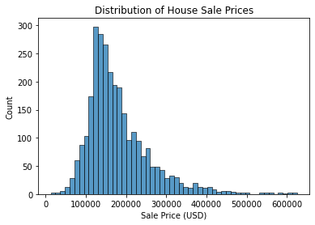

import pandas as pd
import seaborn as sns
import matplotlib.pyplot as plt
import statsmodels.api as sms
from sklearn.linear_model import LinearRegression
# Import custom modules that I wrote.
from custom_modules import linreg_tools as lrt, stratified_kfcv as skf
Introduction
The Ames, Iowa housing dataset was formed by De Cock in 2011 as a high-quality dataset for regression projects. It contains data on 80 features of 2930 houses. The target variable is the sale price of each house.
In order to predict the target, I will use linear regression for both statistical inference and machine learning. To each feature (or independent variable), the model will assign a coefficient that shows how the feature affects the target (or dependent variable). I will use the model’s \(p\) values to determine the features with statistically significant effects, then use these features in our final model for predicting prices from new data.
Note
I wrote this notebook by following a guided project on the Dataquest platform, specifically the Guided Project: Predicting House Sale Prices. The general project flow and research questions were guided by Dataquest. Other than what was instructed, I also added my own steps. You can visit the official solution to compare it to my project.
Below are the packages used in this project.
Note that some of the imported modules are custom ones that I wrote. To view these modules, visit this directory in my website’s repository.
Data Inspection and Cleaning
The journal article that introduced the Ames, Iowa housing dataset is linked here. You may click the “PDF” button on the webpage to access the article, which contains the links to download the data file.
A summary of the columns and their data types is shown below.
Code
houses = pd.read_excel("./private/Linear-Regression-House-Prices-Files/AmesHousing.xls")
houses.info()<class 'pandas.core.frame.DataFrame'>
RangeIndex: 2930 entries, 0 to 2929
Data columns (total 82 columns):
# Column Non-Null Count Dtype
--- ------ -------------- -----
0 Order 2930 non-null int64
1 PID 2930 non-null int64
2 MS SubClass 2930 non-null int64
3 MS Zoning 2930 non-null object
4 Lot Frontage 2440 non-null float64
5 Lot Area 2930 non-null int64
6 Street 2930 non-null object
7 Alley 198 non-null object
8 Lot Shape 2930 non-null object
9 Land Contour 2930 non-null object
10 Utilities 2930 non-null object
11 Lot Config 2930 non-null object
12 Land Slope 2930 non-null object
13 Neighborhood 2930 non-null object
14 Condition 1 2930 non-null object
15 Condition 2 2930 non-null object
16 Bldg Type 2930 non-null object
17 House Style 2930 non-null object
18 Overall Qual 2930 non-null int64
19 Overall Cond 2930 non-null int64
20 Year Built 2930 non-null int64
21 Year Remod/Add 2930 non-null int64
22 Roof Style 2930 non-null object
23 Roof Matl 2930 non-null object
24 Exterior 1st 2930 non-null object
25 Exterior 2nd 2930 non-null object
26 Mas Vnr Type 2907 non-null object
27 Mas Vnr Area 2907 non-null float64
28 Exter Qual 2930 non-null object
29 Exter Cond 2930 non-null object
30 Foundation 2930 non-null object
31 Bsmt Qual 2850 non-null object
32 Bsmt Cond 2850 non-null object
33 Bsmt Exposure 2847 non-null object
34 BsmtFin Type 1 2850 non-null object
35 BsmtFin SF 1 2929 non-null float64
36 BsmtFin Type 2 2849 non-null object
37 BsmtFin SF 2 2929 non-null float64
38 Bsmt Unf SF 2929 non-null float64
39 Total Bsmt SF 2929 non-null float64
40 Heating 2930 non-null object
41 Heating QC 2930 non-null object
42 Central Air 2930 non-null object
43 Electrical 2929 non-null object
44 1st Flr SF 2930 non-null int64
45 2nd Flr SF 2930 non-null int64
46 Low Qual Fin SF 2930 non-null int64
47 Gr Liv Area 2930 non-null int64
48 Bsmt Full Bath 2928 non-null float64
49 Bsmt Half Bath 2928 non-null float64
50 Full Bath 2930 non-null int64
51 Half Bath 2930 non-null int64
52 Bedroom AbvGr 2930 non-null int64
53 Kitchen AbvGr 2930 non-null int64
54 Kitchen Qual 2930 non-null object
55 TotRms AbvGrd 2930 non-null int64
56 Functional 2930 non-null object
57 Fireplaces 2930 non-null int64
58 Fireplace Qu 1508 non-null object
59 Garage Type 2773 non-null object
60 Garage Yr Blt 2771 non-null float64
61 Garage Finish 2771 non-null object
62 Garage Cars 2929 non-null float64
63 Garage Area 2929 non-null float64
64 Garage Qual 2771 non-null object
65 Garage Cond 2771 non-null object
66 Paved Drive 2930 non-null object
67 Wood Deck SF 2930 non-null int64
68 Open Porch SF 2930 non-null int64
69 Enclosed Porch 2930 non-null int64
70 3Ssn Porch 2930 non-null int64
71 Screen Porch 2930 non-null int64
72 Pool Area 2930 non-null int64
73 Pool QC 13 non-null object
74 Fence 572 non-null object
75 Misc Feature 106 non-null object
76 Misc Val 2930 non-null int64
77 Mo Sold 2930 non-null int64
78 Yr Sold 2930 non-null int64
79 Sale Type 2930 non-null object
80 Sale Condition 2930 non-null object
81 SalePrice 2930 non-null int64
dtypes: float64(11), int64(28), object(43)
memory usage: 1.8+ MBThe output above shows the name of each column, its number of non-null values, and its data type. Most of the names are self-explanatory, but others are not so clear. One can visit the data documentation to learn what each column represents.
Here are the first steps I took in order to clean these columns:
- Based on a suggestion in page 4 of De Cock (2011), I deleted 5 outlier observations which had above-ground living areas higher than 4000 square feet.
- I selected 9 useful numeric/ordinal columns and 2 useful categorical columns based on their descriptions in the data documentation.
- I transformed the
Overall QualandOverall Condcolumns. Originally, these contained integers from 1 to 10, which represented ordinal ratings from Very Poor to Very Excellent. I put these ratings into 4 groups:- 1 represents Very Poor to Fair
- 2 represents Below Average to Above Average
- 3 represents Good and Very Good
- 4 represents Excellent and Very Excellent
- I inspected the missing values in my final set of columns.
Code
# Remove outliers based on suggestion in journal article
houses = houses.loc[houses["Gr Liv Area"] < 4000]
# Identify important columns
useful_numerics = [
"Lot Frontage",
"Lot Area",
"Mas Vnr Area",
"Total Bsmt SF",
"Gr Liv Area",
"Fireplaces",
"Garage Area",
# The 2 below are ordinal.
"Overall Qual",
"Overall Cond",
]
useful_categoricals = [
"Lot Config",
"Bldg Type",
]
target_col = "SalePrice"
# Keep only the important columns
houses = houses.loc[:, useful_numerics + useful_categoricals + [target_col]]
ratings_simplified = {
10: 4,
9: 4,
8: 3,
7: 3,
6: 2,
5: 2,
4: 2,
3: 1,
2: 1,
1: 1,
}
# Replace integers in these two columns with a new set of integers
for col in ["Overall Qual", "Overall Cond"]:
houses[col] = houses[col].replace(ratings_simplified)
houses.isnull().sum() / houses.shape[0] * 100Lot Frontage 16.752137
Lot Area 0.000000
Mas Vnr Area 0.786325
Total Bsmt SF 0.034188
Gr Liv Area 0.000000
Fireplaces 0.000000
Garage Area 0.034188
Overall Qual 0.000000
Overall Cond 0.000000
Lot Config 0.000000
Bldg Type 0.000000
SalePrice 0.000000
dtype: float64The table above shows the percentage of missing values in each column. Most columns have less than 1% missingness, but the Lot Frontage column has almost 17% missingness. This is higher than my preferred benchmark of 5% missingness, so I will remove the Lot Frontage column.
After deleting that column, I will remove rows where there are any remaining missing values.
Code
houses = houses.drop("Lot Frontage", axis = 1).dropna()
print(f"Total number of missing values: {houses.isnull().sum().sum()}")
print(f"New shape: {houses.shape}")Total number of missing values: 0
New shape: (2900, 11)Now, the dataset has 2900 rows and 11 columns, including 10 features and 1 target.
Next, two of my features are categorical. Thus, in order to use them in regression, I have to dummy code them. According to the UCLA: Statistical Consulting Group (2021), if there are \(k\) categories in one variable, I must make \(k - 1\) new variables containing zeroes and ones. The reason that only \(k - 1\) variables are made is that one category has to be set aside as the “reference level.” The other categories will be compared to the reference level when I fit the model.
In Python, I will do this using the pd.get_dummies() function. I will set the drop_first parameter to True so that one category will be excluded from the final variables.
Code
cat_features = ["Lot Config", "Bldg Type"]
houses = houses.merge(
pd.get_dummies(houses[cat_features], drop_first = True),
left_index = True,
right_index = True,
how = "outer",
)
houses = houses.drop(cat_features, axis = 1)
(
houses
.loc[:, houses.columns.to_series().str.match(r"Lot Config|Bldg Type")]
.head()
)| Lot Config_CulDSac | Lot Config_FR2 | Lot Config_FR3 | Lot Config_Inside | Bldg Type_2fmCon | Bldg Type_Duplex | Bldg Type_Twnhs | Bldg Type_TwnhsE | |
|---|---|---|---|---|---|---|---|---|
| 0 | 0 | 0 | 0 | 0 | 0 | 0 | 0 | 0 |
| 1 | 0 | 0 | 0 | 1 | 0 | 0 | 0 | 0 |
| 2 | 0 | 0 | 0 | 0 | 0 | 0 | 0 | 0 |
| 3 | 0 | 0 | 0 | 0 | 0 | 0 | 0 | 0 |
| 4 | 0 | 0 | 0 | 1 | 0 | 0 | 0 | 0 |
The table above shows the first 5 rows of the new variables that were created. Since there were 5 categories in the Lot Config variable, 4 new variables were created. This is also the case for the Bldg Type variable.
Let’s take the first column, Lot Config_CulDSac, as an example. It represents houses that are situated on a cul-de-sac. A house with a value of 1 in this column is a house on a cul-de-sac. Other houses, with values of 0, are not.
The data is clean now, so I can proceed to statistical inference.
Statistical Inference
In this section, I will fit an Ordinary least Squares (OLS) linear regression model. Then, I will check the assumptions of linear regression in order to make sure that this is the right model for the problem. I will also use the results of the model to select the best features.
The code below fits the OLS model and outputs the first of three tables of results. I will interpret the results based on what I learned from the article “Linear Regression” by Python for Data Science (n.d.).
Code
feature_cols = [x for x in houses.columns if x != target_col]
# Add a constant column in the dataset so that the model can find the y-intercept.
X = sms.add_constant(
houses[feature_cols]
)
y = houses[target_col]
# Obtain Variance Inflation Factors.
vif_df = lrt.get_vif(X)
model = sms.OLS(y, X)
results = model.fit()
summary = results.summary()
tables = lrt.extract_summary(summary, vif_df)
tables[0]C:\Users\migs\anaconda3\envs\new_streamlit_env2\lib\site-packages\statsmodels\tsa\tsatools.py:142: FutureWarning: In a future version of pandas all arguments of concat except for the argument 'objs' will be keyword-only
x = pd.concat(x[::order], 1)| 0 | 1 | 2 | 3 | |
|---|---|---|---|---|
| 0 | Dep. Variable: | SalePrice | R-squared: | 0.838 |
| 1 | Model: | OLS | Adj. R-squared: | 0.837 |
| 2 | Method: | Least Squares | F-statistic: | 929.200 |
| 3 | Date: | Fri, 14 Jan 2022 | Prob (F-statistic): | 0.000 |
| 4 | Time: | 14:44:14 | Log-Likelihood: | -34163.000 |
| 5 | No. Observations: | 2900 | AIC: | 68360.000 |
| 6 | Df Residuals: | 2883 | BIC: | 68460.000 |
| 7 | Df Model: | 16 | NaN | NaN |
| 8 | Covariance Type: | nonrobust | NaN | NaN |
This first table shows two important things. The R-squared value is equal to 0.838, meaning that the model explained 83.8% of the variance in the data. Ideally, I would want a value close to 100% but this is good. Also, the p value of the F-statistic is equal to 0. Since \(p < 0.05\), the model was statistically significant overall.
Next, below is the second table of results.
Code
tables[1]| coef | std err | t | P>|t| | [0.025 | 0.975] | VIF | |
|---|---|---|---|---|---|---|---|
| feature | |||||||
| const | -105800.0000 | 4319.486 | -24.498 | 0.000 | -114000.000 | -97400.000 | 53.813031 |
| Lot Area | 0.5717 | 0.084 | 6.789 | 0.000 | 0.407 | 0.737 | 1.243636 |
| Mas Vnr Area | 49.6396 | 3.863 | 12.849 | 0.000 | 42.065 | 57.214 | 1.334007 |
| Total Bsmt SF | 40.8966 | 1.780 | 22.979 | 0.000 | 37.407 | 44.386 | 1.618427 |
| Gr Liv Area | 48.9365 | 1.660 | 29.481 | 0.000 | 45.682 | 52.191 | 1.883476 |
| Fireplaces | 7000.7868 | 1069.148 | 6.548 | 0.000 | 4904.416 | 9097.158 | 1.373267 |
| Garage Area | 53.8240 | 3.528 | 15.256 | 0.000 | 46.906 | 60.742 | 1.643206 |
| Overall Qual | 44530.0000 | 1344.831 | 33.113 | 0.000 | 41900.000 | 47200.000 | 1.924753 |
| Overall Cond | 9206.0505 | 1269.656 | 7.251 | 0.000 | 6716.526 | 11700.000 | 1.056642 |
| Lot Config_CulDSac | 14770.0000 | 2804.614 | 5.265 | 0.000 | 9266.896 | 20300.000 | 1.307018 |
| Lot Config_FR2 | 371.8734 | 3776.296 | 0.098 | 0.922 | -7032.639 | 7776.385 | 1.156834 |
| Lot Config_FR3 | 8290.0511 | 8929.437 | 0.928 | 0.353 | -9218.674 | 25800.000 | 1.026279 |
| Lot Config_Inside | 4695.2344 | 1586.888 | 2.959 | 0.003 | 1583.685 | 7806.784 | 1.425754 |
| Bldg Type_2fmCon | -21140.0000 | 4144.743 | -5.100 | 0.000 | -29300.000 | -13000.000 | 1.036636 |
| Bldg Type_Duplex | -24340.0000 | 3214.492 | -7.572 | 0.000 | -30600.000 | -18000.000 | 1.078048 |
| Bldg Type_Twnhs | -9050.9650 | 3363.564 | -2.691 | 0.007 | -15600.000 | -2455.731 | 1.096859 |
| Bldg Type_TwnhsE | 3408.7248 | 2328.503 | 1.464 | 0.143 | -1156.975 | 7974.425 | 1.146414 |
Each row other than the constant row represents a feature.
The coef column gives the increase in the target for a one-unit increase in the feature (Frost, 2017). For example, the coefficient of Gr Liv Area (above-ground living area in square feet) is around 49. Therefore, for every 1 square foot increase in living area, the sale price increases by USD 49.
According to UCLA: Statistical Consulting Group (2021), the coefficient of a dummy-coded variable gives the difference between the mean of the target for the level of interest and the mean of the target for the reference level. For example, the coefficient of Lot Config_CulDSac is 14,770. Therefore, the price of a house on a cul-de-sac is usually USD 14,770 higher than that of a house on a corner lot.
The P>|t| column gives the p value of each feature. A p value less than 0.05 can be considered statistically significant, whereas a p value above that threshold is not. In the case of this model, most of the features are statistically significant.
The insignificant features are Lot Config_FR2 (houses with frontage on 2 sides), Lot Config_FR3, and Bldg Type_TwnhsE (Townhouse End Units). Though these are not significant, I will keep them in the model because they are necessary components of the dummy-coded categorical variables.
Next, the VIF column contains Variance Inflation Factors. I wrote code to calculate these values based on an article, “Detecting Multicollinearity with VIF – Python,” by cosine1509 (2020).
According to Frost (2017), VIFs are a measure of multicollinearity among independent variables. The lowest possible value is 1, which means no collinearity at all. Values between 1 and 5 show low to moderate multicollinearity, so these are acceptable. However, values over 5 show high multicollinearity and need to be investigated.
In the case of this model, all of the VIFs of the features are below 2. The VIF of the constant term is high, but this is not important.
In summary, based on the p values and VIF values, there is no need to change the features used in the model. Most of them are significant, and all of them have low multicollinearity.
Finally, let us look at the third table of results.
Code
tables[2]| 0 | 1 | 2 | 3 | |
|---|---|---|---|---|
| 0 | Omnibus: | 421.519 | Durbin-Watson: | 1.583 |
| 1 | Prob(Omnibus): | 0.000 | Jarque-Bera (JB): | 3490.274 |
| 2 | Skew: | 0.426 | Prob(JB): | 0.000 |
| 3 | Kurtosis: | 8.307 | Cond. No. | 195000.000 |
The Durbin-Watson test statistic is 1.583. According to Python for Data Science (n.d.), this statistic should ideally be close to 2. If it is below 2, there is positive autocorrelation among the residuals, so one of the assumptions of linear regression is violated. However, as a rule of thumb, values between 1.5 and 2.5 are acceptable. Thus, this statistic is not a cause of concern.
On the other hand, the Jarque-Bera p value is 0. Because \(p < 0.05\), the statistic is significant, so the residuals are not distributed normally. However, Mordkoff (2016) says that according to the Central Limit Theorem, “as long as the sample is based on 30 or more observations, the sampling distribution of the mean can be safely assumed to be normal.” Therefore, this is fine.
That’s it for the statistical inference part of this project. Now that I know that my variables are statistically significant, I can make a predictive model and evaluate it.
Predictive Modeling and Evaluation
In this last part, I will use scikit-learn to fit a linear regression model for prediction. A 5-fold cross-validation will be used in order to evaluate the model.
In my recent project about the KNN model, I wrote some custom functions that help perform stratified cross-validation. This means that the folds are divided such that each fold’s target distribution (in this case, price distribution) is similar to that of the full sample. I put the custom functions in the stratified_kfcv file, which can be found here for your reference.
I performed stratified 5-fold cross-validation on the housing data, so 5 models were fitted and their RMSEs were recorded. The results are shown below.
Code
fold_series = skf.stratify_continuous(
n_folds = 5,
y = houses["SalePrice"],
)
lr = LinearRegression()
mse_lst = skf.stratified_kfcv(
X = sms.add_constant(houses[feature_cols]),
y = houses[target_col],
fold_series = fold_series,
regression_model = lr,
)
rmses = pd.Series(mse_lst).pow(1/2)
print(f"""RMSE Values:
{rmses}
Mean RMSE: {rmses.mean()}
SD RMSE: {rmses.std(ddof = 1)}""")RMSE Values:
0 32046.873780
1 30927.932397
2 30637.750905
3 33020.953872
4 32832.216461
dtype: float64
Mean RMSE: 31893.145482987817
SD RMSE: 1082.253470974206C:\Users\migs\anaconda3\envs\new_streamlit_env2\lib\site-packages\statsmodels\tsa\tsatools.py:142: FutureWarning: In a future version of pandas all arguments of concat except for the argument 'objs' will be keyword-only
x = pd.concat(x[::order], 1)The mean RMSE is 31,893. Therefore, the predicted prices are usually USD 31,893 away from the true prices. Also, the standard deviation RMSE is around 1082, so the RMSE values were relatively consistent from test to test.
The mean RMSE may seem high, but remember the distribution of house prices in the dataset:
Code
sns.histplot(
data = houses,
x = "SalePrice"
)
plt.title("Distribution of House Sale Prices")
plt.xlabel("Sale Price (USD)")
plt.show()
The prices are mostly around USD 100,000 to USD 300,000. Thus, the mean RMSE is relatively small considering the prices. Therefore, I would say that the model performs decently, but it could be improved.
Conclusion
In this project, I cleaned data about houses in Ames, Iowa, selected features that may be useful, interpreted linear regression results to determine significant features, then evaluated a predictive model. I found that the 16 independent variables explained 83.8% of the variance \((R^2 = 0.838, F(16, 2883 = 929.2), p < 0.05)\). Furthermore, the predictive model had a mean RMSE of 31,880, which was decent but not ideal.
Thanks for reading!
Bibliography
Data Source
De Cock, D. (2011). Ames, Iowa: Alternative to the Boston Housing Data as an End of Semester Regression Project. Journal of Statistics Education, 19(3), null. https://doi.org/10.1080/10691898.2011.11889627
Information Sources
Coding Systems for Categorical Variables in Regression Analysis. (n.d.). UCLA: Statistical Consulting Group. Retrieved December 26, 2020, from https://stats.idre.ucla.edu/spss/faq/coding-systems-for-categorical-variables-in-regression-analysis-2/
cosine1509. (2020, August 14). Detecting Multicollinearity with VIF - Python. GeeksforGeeks. https://www.geeksforgeeks.org/detecting-multicollinearity-with-vif-python/
Frost, J. (2017a, April 2). Multicollinearity in Regression Analysis: Problems, Detection, and Solutions. Statistics By Jim. http://statisticsbyjim.com/regression/multicollinearity-in-regression-analysis/
Frost, J. (2017b, April 12). How to Interpret P-values and Coefficients in Regression Analysis. Statistics By Jim. http://statisticsbyjim.com/regression/interpret-coefficients-p-values-regression/
Mordkoff, J. T. (2016). The Assumption(s) of Normality. http://www2.psychology.uiowa.edu/faculty/mordkoff/GradStats/part%201/I.07%20normal.pdf
Python for Data Science. (2018, March 15). Linear Regression. Python for Data Science. https://pythonfordatascienceorg.wordpress.com/linear-regression-python/
Image Source
Assis, B. (2018, January 17). Photo by Breno Assis on Unsplash. Unsplash. https://unsplash.com/photos/r3WAWU5Fi5Q